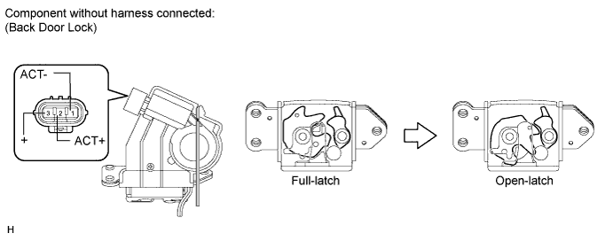

BACK DOOR LOCK > INSPECTION |
| 1. INSPECT BACK DOOR LOCK ASSEMBLY |
Set the back door lock to the full-latch position.
Apply battery voltage to the door motor terminals and check the operation of the door lock motor.

| Measurement Condition | Specified Condition |
| Battery positive (+) → 2 (ACT+) Battery negative (-) → 1 (ACT-) | Moves to open-latch position |
Measure the resistance according to the value(s) in the table below.
| Tester Connection | Condition | Specified Condition |
| 1 (ACT-) - 3 (+) | Open-latch | Below 1 Ω |
| 1 (ACT-) - 3 (+) | Full-latch | 10 kΩ or higher |